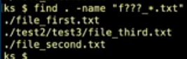

Searching for Files
find path expression
we use the find command, followed by the path we want to search, followed by the expression we want to use for searching
the expressions
the are many expression to use for the find command
but the most common expression is:
-name
find /home -name "vacation_photo.jpg"
in this example we use the dot (.) notation indicating the current directory "pwd"

but what if we don't know the exact file name
find Wildcard Characters
find allows us to use some wild card characters from regular expressions
| Wildcard | Description |
|---|---|
| * | zero or more characters (glob) |
| ? | any one character |
| [] | any character within bracket |
Examples
here is the same directory from above containing files and directories
lets use the asterisk wildcard character to find any file ending in .txt
notice how find is recursive, meaning it will go inside directories within the find command's specified directory
more examples
find file name starting with f then three characters _underscore then anything that ends with .txt
find . -name "f???_*.txt"
would return the same thing as